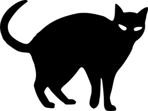
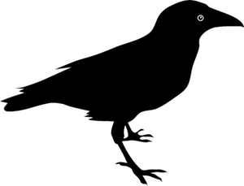
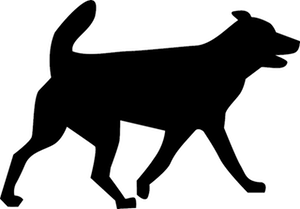

Animal Companions
Background
Since time immemorial, certain animals have been revered and worshipped as spirits of nature, and were
known to the ancients as power animals or the animal guides of the Gods. Many animals became associated
with various deities, such as the hound with Diana, the toad with Hecate, the raven with Proserpina, the
goat with Pan, and the owl with Athena. The ancients believed animals were closer to nature than humans,
and would perform rituals and make offerings to their spirits in attempts to communicate with them.
Shamans believed that all things and beings, particularly animals, were possessed of a spirit or soul,
and that one could attract parts of their soul (and thus their spirit and powers) by mimicry. Therefore
they would dress in appropriate animal furs, feathers, horns and fierce-looking masks while performing
dances and imitating the animal. The shaman would keep and use the same animal spirits until his death,
at which time they would disappear, or be passed on to aid his apprentice.
As witchcraft evolved, it is not surprising, then, that witches should have adopted certain animals as
their own link to nature, spirits and deities. Wise men and women commonly used animals, while wizards,
magicians and village healers used them to diagnose illnesses, to find sources of bewitchment, to find
lost property or treasure, and for other types of divination.
It was not until the Middle Ages and the rise of Christianity that witches’ pets and animals became
thought of as agents of evil. As the persecution of witches began, so the Church started to teach that
witches' familiars were associates of the Christian Devil, and they came to be thought of as demons and
evil spirits in animal form, sent out by the witch to do their evil bidding. It was also believed that
witches possessed the power to transform themselves into animals, in which guise they committed any number
of diabolical deeds. Later, witches were also believed to use animal products in spells, and the making of
potions and concoctions to aid transformation, gain power over nature or even to harm and kill. In the 17th
Century, the infamous Witchfinder General, Matthew Hopkins, would tie a suspected witch up in a cell, and
secretly watch for the arrival of an animal familiar (even a fly or beetle), which was deemed proof enough
that they were indeed witches.
Many modern witches still use animals when working with magic, utilizing their primordial instincts and
psychic abilities to attune with nature and deities. Animals are considered sensitive to psychic power and
vibrations, and are welcomed into the magic circle when power is being raised or spells are being cast, or
to aid with scrying, divination and spirit contact. When working with magic, animals can act as a guard in
psychic defence, for they react visibly to negative forces and harmful energy.
Cats
In folklore, a cat (especially a black cat) is associated with witches.
A witch or sorcerer was reputed to own a cat as a familiar, and they were believed to embody demons who
performed the witch’s tasks. Witches were said to take the form of a cat nine times (a reflection of the
traditional nine lives of a cat), and they were also used for spells. In modern witchcraft, the cat is a
common pet and familiar, kept for its psychic sensitivity.
Toads
Toads were used as ingredients in brews and as familiars. Toad skins
were used by shamans for the poisons or hallucinogens which are secreted from their glands when injured
or provoked (depending on the type of toad, a poison may just taste bad, or it may even kill). According
to folklore, toads were used as charms and amulets, in brews and magic remedies, and also at witches’
Sabbats.Toads may be used as familiars, as they are considered intelligent, easy to tame and easy to care
for, and are also thought to have psychic powers.
Birds & Bats
In many parts of the world, a witch was thought to turn into a crow or a
raven for her night-time adventures, so they could fly away in case of an emergency. The owl has always
been associated with death, sorcery and the dark side of life. In the Middle Ages, demons or familiars in
the forms of owls or crows supposedly attended witches, accompanying them on their broomstick flights and
carrying out their evil commands. Bats were also considered a favourite for witches to change into as they
have good night vision and easily merge with the dark night-time sky.
Dogs
Witches were supposedly able to transform into a dog, or to send a demon
familiar in the form of a dog to bewitch or torment victims. Dogs known as “Black Shuck” (or “Old Shuck”)
were known in English folklore to mean a demon, and the Devil himself was widely supposed to appear as a
black dog.